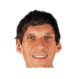

“In the bubble, with the way we handled ourselves, team success comes with individual accolades. I think that is what really happened in the bubble. I saw each and every one of us really grow. We won some games and we started to put the right staff in. That is why we are here, to be honest. Whatever we are doing [now], was built in the bubble. “Winning was contagious and we added pieces like CP, Jae [Crowder], E’Twaun Moore, Langston Galloway and Torrey Craig. Those are guys who have been in the game and played at high levels like this. That is the best way I can think of how I turned my career into a positive one.”

What Deandre Ayton has said about other NBA players and coaches
28 quotes from Deandre Ayton about 29 other people around the NBA, newest first. Each one links to its original source.
Best quotes
Talk to the ref before the game and tell them to be on the lookout for these cheeky plays.
“In the post, I'll tell the refs, when I know it's a center that likes to bang, like Jokic, I'll tell the ref, 'Hey, just watch my hands,'”
“[Austin Reaves] is my guy. [Luka Doncic] is my guy. But my wings and my forwards? Yeah,they be trying to get me ticked off before these games just to get me rolling. I’m starting to see it as a trend because I don’t get a break until we’re on the court. Then it’s all seriousness. “I’m like, ‘Oh, this is a thing y’all want to do. Y’all want to get me on edge. Y’all want me fired up.’ I like it. … Dudes really care.”
What NBA players and coaches have said about Deandre Ayton →
Quotes per season
Deandre Ayton talks most about
 Deandre Ayton on LeBron James3 quotes
Deandre Ayton on LeBron James3 quotes Deandre Ayton on Chris Paul2 quotes
Deandre Ayton on Chris Paul2 quotes Deandre Ayton on DeMarcus Cousins2 quotes
Deandre Ayton on DeMarcus Cousins2 quotes Deandre Ayton on Joel Embiid2 quotes
Deandre Ayton on Joel Embiid2 quotes Deandre Ayton on Monty Williams2 quotes
Deandre Ayton on Monty Williams2 quotes Deandre Ayton on Nikola Jokic2 quotes
Deandre Ayton on Nikola Jokic2 quotes Anthony Davis1 quote
Anthony Davis1 quote Austin Reaves1 quote
Austin Reaves1 quote Bam Adebayo1 quote
Bam Adebayo1 quote Blake Griffin1 quote
Blake Griffin1 quote
Boban Marjanovic1 quote Deni Avdija1 quote
Deni Avdija1 quote
2025-26
7 quotesDeandre Ayton on Luke Kennard:
“He is the number one shooter in the NBA so, you know, there's not much to say but, you know, he's doing it in the playoffs where it really counts. My word is speechless to be honest.”
Deandre Ayton on how he handles JJ Redick calling out the teams effort in losses:
“I feel like when i'm not doing what i'm supposed to do, it's contagious. I be hard on myself especially when JJ is upset because when it comes to that effort on multiple plays, i'm one of those guys he is definitely talking too. I take pride in that”
MrBuckBuck: Deanre Ayton on playing his first game with LeBron James:
“He threw me an alley-oop and I told him, ‘That’s my 2nd alley-oop from you. The 1st one was when I was in 8th grade at your camp.’”
“They definitely was talking crap to me the whole time. … Deni Avdija, every shot he made he kept rubbing it in.”
“[Austin Reaves] is my guy. [Luka Doncic] is my guy. But my wings and my forwards? Yeah,they be trying to get me ticked off before these games just to get me rolling. I’m starting to see it as a trend because I don’t get a break until we’re on the court. Then it’s all seriousness. “I’m like, ‘Oh, this is a thing y’all want to do. Y’all want to get me on edge. Y’all want me fired up.’ I like it. … Dudes really care.”
LeBron James even popped out of his chair.
“Yeah, I ain’t gonna lie, I did not expect LeBron and everybody to be that hyped, man. I know I missed it, but that’s what they like. They want me to do that s—,”
Ayton on playing with Luka and LeBron:
“They both average about 9 assists over their career span, and just the type of players they create with their teammates. They turn them into superstars, they make them bigger than their roles, they make them very important on the floor. Just seeing that and finally getting the chance to go in and experience that would be big for me. Just getting me back to my full form of how I used to play, you know, coming up and being a part of the (NBA) Finals. It’s those playmakers I’m used to having around me that’s leading to wins.”
2024-25
1 quoteDeandre Ayton on Donovan Clingan:
“He's a beast. He's hard to move out of the paint. I don't care how young he is, that's a big dude. He knows how to use his body. He's a sacrificial dude. Literally everything he does is for the team. There's nothing selfish about that kid. He's keeping up with the running, too. We've been working his ass a little bit, but he's been keeping up. He's not backing down at all. That dude's a true winner.”
2022-23
2 quotesDeandre Ayton on his reaction to Kevin Durant's arrival:
“That's the question i'm trying to answer my damned self. I'm really speechless to be honest. We got KD! Ain't that something?!”
Deandre Ayton on a suspension probably coming for Patrick Beverley and how he didn't get involved:
“They're not gonna get me there. Me, it's like I got Monty Williams to answer to at the end of the day. I ain't want him to be disappointed in me for doing that nonsense like that.”
2020-21
6 quotesDeandre Ayton on Chris Paul:
“Ilove CP, man. That's the only guy that's ever pushed me, like big bro PUSHED me...he cares so much, I've never known a guy that cares so much about basketball and competing.”
“In the bubble, with the way we handled ourselves, team success comes with individual accolades. I think that is what really happened in the bubble. I saw each and every one of us really grow. We won some games and we started to put the right staff in. That is why we are here, to be honest. Whatever we are doing [now], was built in the bubble. “Winning was contagious and we added pieces like CP, Jae [Crowder], E’Twaun Moore, Langston Galloway and Torrey Craig. Those are guys who have been in the game and played at high levels like this. That is the best way I can think of how I turned my career into a positive one.”
Gerald Bourguet:Deandre Ayton on Devin Booker's performance:
“Devin definitely took control, he led the team. He made sure we played as a unit and didn't forget our togetherness on the floor.”
“I definitely see myself as being that player, but better. Being the guy that’s known for that, and not just capable of that. Defense is so important to my play style and that’s what creates my offense and that’s what helps my team score. Defense wins games — and that’s what I want to be known for when I’m done with this thing. “I’m a little bit of both of (Gobert and Adebayo). I’m a similar player like Gobert, being a presence down low in pick-and-rolls and handling screens and letting the pick-and-roll come to me by letting the offensive players come to me. But also switching it up, being versatile and guarding on the perimeter. Switching on guards, moving my feet on two or three dribbles.”
Talk to the ref before the game and tell them to be on the lookout for these cheeky plays.
“In the post, I'll tell the refs, when I know it's a center that likes to bang, like Jokic, I'll tell the ref, 'Hey, just watch my hands,'”
Gerald Bourguet:Deandre Ayton on Chris Paul:
“I know he's gonna be on my tail. Me and Book need that. This team needs that.”
2018-19
8 quotes#SunsDeandre Ayton on Monty Williams hire:
“Sarver says he’s a great guy, so I’ll roll with that...(I know he’s got a lot of experience) working w/big guys. It sounds good. It’s a different beast over here. We’re trying to start something totally different up in in this city.”
Deandre Ayton on Kelly Oubre:
“He has been playing super hard. He is matching the same energy that I have, that we all have. It is beautiful. He fits right in. You can tell he wants to win, and he tries his best on defense.”
Suns rookie center Deandre Ayton on his first matchup against Clippers 7-3 center Boban Marjanovic:
“He's freakishly big. That's my first time playing against someone that can just take the ball above my head and just not jump. I had an experience of a lifetime.”
Gina Mizell:Deandre Ayton on what he learned about guarding post after Nikola Jokic torched the #Suns Saturday:
“College is way different. You can barely touch the dude. I was kind of giving (Jokic) that leeway to let him finish over me. You've got to stand your ground.”
Deandre Ayton on Joel Embiid:
“I can't really say anything, I haven't even put the ball in the hoop [yet]. All I can do is let my game talk.”
“I’m trying to be Rookie of the Year and the first rookie [since Blake Griffin] to be an All-Star,”
“We have the talent, we’re young, we can run. Our vets can help us. I can’t wait to see Tyson Chandler to really tell me the ropes on how to defend the post and how to talk to refs certain ways, even if you’re mad or fatigued. I just want him to teach me that.”
Deandre Ayton on meeting Diana Taurasi Tuesday:
“I was freaking out. She was saying, ‘Hello, it’s great to have you.’ I was like star-struck. I was speechless. She is the Michael Jordan of the WNBA.”
2017-18
4 quotesDeandre Ayton on Mikal Bridges:
“He's most definitely a winner. A two-time champion. A great shooter and defender. He's very athletic. He's a THREAT.”
Back at lunch, Ayton is looking at his phone when he says to no one in particular,
“You saw Michael Porter Jr. say he was the best player in the draft?”
“Demarcus Cousins, he can move. With his size, he can really use his size on the perimeter against anybody. That’s what I want to do when I get to the league.”
“I look at all the bigs that are pretty versatile like Joel Embiid, DeMarcus Cousins and Anthony Davis and of course (Kristaps) Porzingis,”